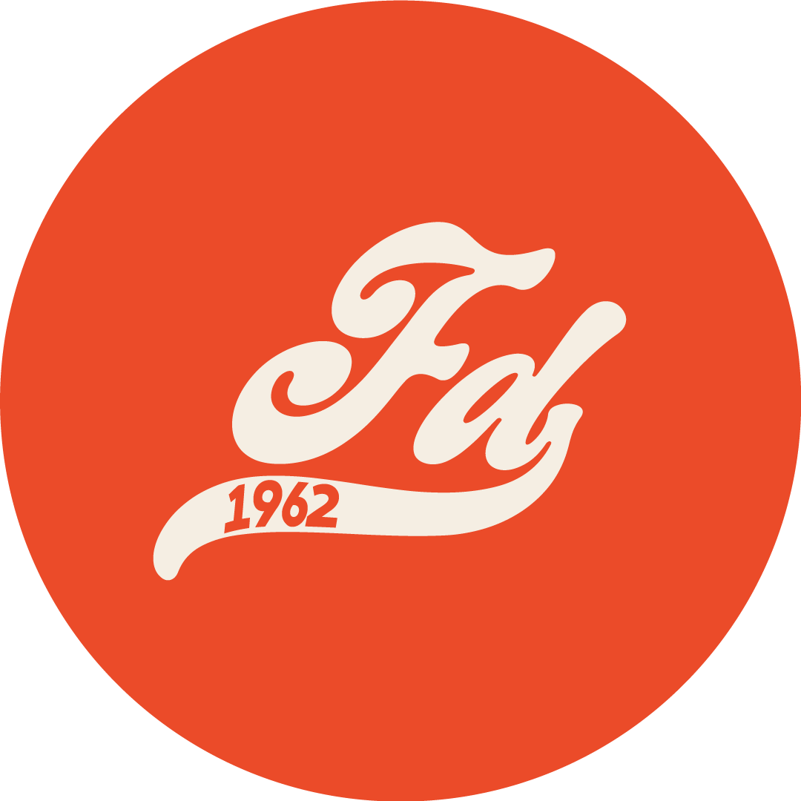

Sobre mí

Considero que la ilustración es mi mayor fortaleza, aunque también me desenvuelvo con habilidad en otros campos del diseño gráfico.
Mi estilo está marcado por una mirada a lo cotidiano desde el humor ácido con colores vibrantes, personajes caricaturescos y surrealistas. Me interesa explorar lo oscuro y lo absurdo de la condición humana con humor y personajes fuera de lo común, todo desde el estilo clásico de los cartoons.